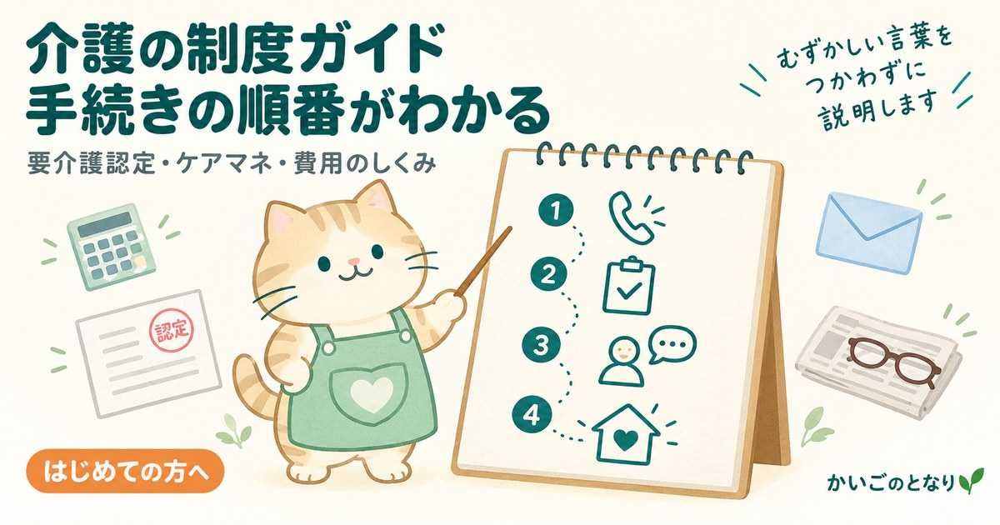

制度ガイド

制度のしくみ、手続きの順番、用語の意味をまとめています。事業者一覧を読む前にどうぞ。
制度のしくみ、手続きの順番、用語の意味をまとめたページです。事業者一覧のページを読む前に、ここで全体像をつかんでおくと迷いにくくなります。
相談・手続き
訪問介護のしくみ
お金のしくみ
区分支給限度基準額とは1か月に使える上限と超過分の扱い準備中
介護保険外サービスの相場保険で頼めないことをどう補うか準備中
家賃債務保証会社の選び方保証人がいない場合の備え準備中
食事・健康
住まい・終活
住宅セーフティネット制度とは入居を拒まない賃貸住宅の登録準備中
高齢者が賃貸を断られる理由と対策審査を通す5つの準備
サ高住と老人ホームの違い費用・入居条件・退去要件の比較
生前整理の進め方住み替え前の家財整理
「準備中」と表示されているガイドは、内容がそろい次第公開します。急ぎの手続きについては、お住まいの地域包括支援センターへご相談ください。